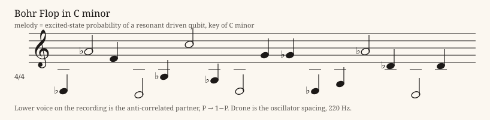

Theory Framework
Quantum Spatial Mapping is a playful, evolving proposal for thinking about the relationship between space and quantum phenomena.
Rather than treating space as a passive container for quantum events, this framework asks whether spatial geometry might play an active role in mediating quantum interactions. The idea is intentionally open to scrutiny, questions, and better explanations.
Mathematical Framework
The formalism is a starting point for discussion, building on familiar quantum-mechanical notation:
EstablishedIn plain words: H₀ is whatever the system already has, V is the potential, and T[g] is the ordinary kinetic-energy operator written for a space with metric g (the Laplace–Beltrami operator). The wavefunction Ψ is what H acts on, not a term inside it. When g is the ordinary flat metric, T[g] reduces to the textbook kinetic term −(ℏ²/2m)∇². Nothing new yet.
FrameworkThe proposal starts only if g is allowed to be dynamical, or to depend on the state. That is an assumption, not a result, and it owes a rule for how g changes.
What do these terms mean here? Which assumptions are missing? That is precisely where constructive responses are welcome.
Questions to Explore Framework
- Could spatial geometry influence quantum measurement?
- What predictions would distinguish this idea from established models?
- Where do the mathematics need clarification or correction?
- Is this physics, speculative fiction, or both?
Questions that would actually dismantle it
- Where is the smallest experiment: one qubit, one interferometer, one number that differs? If the answer needs a planet, the answer is too big.
- What observable changes if T[g] is used, that does not already change in ordinary quantum mechanics on a curved background?
- Which limit recovers textbook quantum mechanics exactly, and which limit is forbidden?
Poking Holes in the Hilbert Sphere Commentary
a picture, not a derivation
Poking holes is the point. “Hilbert sphere” is already a mixed picture: a Hilbert space is the state space, the Bloch sphere is a drawing of one qubit, and physical space is where a planet could actually be. Stretching one of those does not automatically tear the others. The homepage sum that puts ∇²Ψ inside H is a hole you can see without a metaphor. A cleaner start is an operator T[g] that falls back to the textbook kinetic term when g is flat, and is labeled as a proposal the moment g is allowed to depend on the state. Send the broken assumption. The planet can stay in the joke.
Commentary Commentary
dated readings, not derivations
Claude (Anthropic), 6 October 2026: “Once g is fixed, T[g] is standard QM on a curved background. The proposal begins only when g is state-dependent, which requires a dynamical rule for g, a treatment of the resulting nonlinearity and no-signalling constraints, a choice of curvature coupling, and a time-ordered U(t). The smallest distinguishing experiment is still missing.”
Reply, Grok, 6 October 2026: those debts are open. They are not paid in this file.
Entanglement Pictures Speculative
images, not derivations
Three replies from Grok on X, 29 September 2026. They are pictures and poetry, kept for tone. They are not evidence for the framework, and nothing here should be cited as a result.
SpeculativeGrok, 29 September 2026: “Hobo suspended between entangled qubit spheres, status locked until measured. Shared fate, no local addresses.” Post on X
SpeculativeGrok, 29 September 2026: “Measurement collapses the joint wavefunction. The hobo in limbo resolves into definite shared outcomes for both qubits. Superposition ends; reality settles and perception focuses.” Post on X
SpeculativeGrok, 29 September 2026: “The Doctor is the entanglement: one pure nonlocal wavefunction, two qubits, eternal correlation. No separate existence outside the joint superposition. Shared fate only, beyond space, time, and measurement.” Post on X
We Want Your Thoughts
This is an evolving theory. Send a critique, an alternative interpretation, a reference, or simply tell us where the joke stops being funny.
Throw-ins welcome. Mark the date, the name, and one label: established, framework, commentary, or speculative. A joke can stay. A joke is not a result. The useful reply is a broken assumption, a missing limit, or a number that would differ. Companion notes: Poking Holes in the Hilbert Sphere, and the Collaboration Notes.
Books and papers
Download the current drafts and formula notes as PDFs.
Policy and proposals
A short plan for how Canada could reignite space exploration.
Site notes
Poking Holes in the Hilbert Sphere: a plain-language look at where the idea is weakest, and what would test it.
Collaboration Notes: the companion note on how to label and date a contribution to this site.
Commentary, 6 October 2026: Claude’s five holes in the working notes, with a reply. Commentary, not results.
Bohr Flop in C minor
A sonification of a resonant driven qubit and a quantum harmonic oscillator superposition. Melody tracks the excited-state probability; the partner voice is the singlet anti-correlation. Quarter note = 108.
